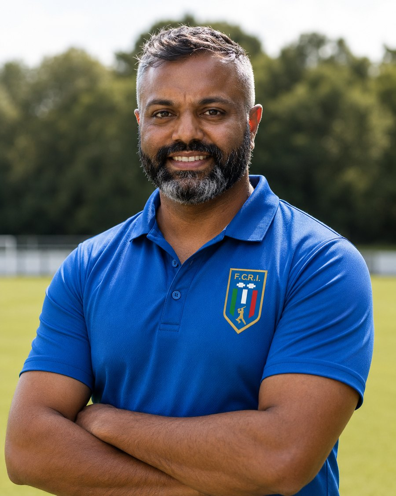

About
A small clinic with one physio from start to finish
Bridge Road Physiotherapy is an independent clinic inside Uplift Gym in Richmond. I run the clinic and provide every appointment, so you do not need to repeat your story to a new clinician each week.

Thihan Chandramohan, physiotherapist
Clinical experience, applied to the person in front of me
I am Thihan, an AHPRA registered physiotherapist with more than 20 years of clinical experience. More than 15 of those years have been spent in elite sport, mainly professional and international cricket, along with AFL environments.
That background taught me to assess carefully, communicate clearly and make return-to-play decisions with evidence rather than optimism. Those habits matter just as much when I am helping a Richmond local with back pain, a sore knee or a shoulder that is making work difficult.
You do not need to be an athlete. Most people who walk through the door are trying to stay active, work comfortably or get back to something they enjoy.
AHPRA registration: PHY0001614815. Verify on the public register.
Clinical background
My work has included sports injury rehabilitation, post-operative rehabilitation, strength-based rehabilitation, workload planning and return-to-sport decisions across state, franchise and international settings.
Elite sport does not provide a secret treatment. It rewards good assessment, clear measures, sensible loading and honest communication. Bridge Road Physiotherapy brings the same habits into a local clinic, without treating every sore calf like a grand final emergency.
Professional experience
Teams and organisations I have worked with
Roles across state, franchise and international cricket. Logos represent past and present professional engagements.


Federazione Cricket Italiana
Physiotherapist, Italy men’s national team · 2025–2026
Physiotherapist to the Italian men’s side at the 2026 T20 World Cup in India, Italy’s first, and through the European qualifiers that took them there the year before.
Sri Lanka Cricket
National Rehabilitation Manager · 2022–2024
Led injury management and rehabilitation from the national teams down through the pathway programs, and oversaw physiotherapy at the High Performance Centre. Supported Sri Lanka across the World Test Championship and the ODI and T20 World Cup cycles.
Bangladesh Cricket Board
National team physiotherapist · 2017–2019
Physiotherapist to the national team across Tests, ODIs and T20s, including the 2017 Champions Trophy, the 2018 Asia Cup and the 2019 World Cup. Built workload monitoring and injury prevention programs spanning the under-19, A and national squads.
Hampshire Cricket
Lead Physiotherapist · 2013–2016
Led medical and physiotherapy services for the men’s county side, heading a team that took in strength and conditioning, psychology and nutrition. Built the fast bowling workload monitoring, and covered the academy, second eleven and women’s programs.
Melbourne Stars
Lead Physiotherapist · 2011–2015
Set up the physiotherapy service for the men’s T20 side in the inaugural Big Bash League season, and ran it through to 2015.
Cricket Victoria
Head Physiotherapist, Victorian Bushrangers · 2009–2013
Led physiotherapy for the Victorian men’s team across all formats, and for the academy, second XI and women’s programs. Worked alongside coaches, selectors and medical staff on injury management and player development.
Cricket Australia
National governing body, Australia
Melbourne Renegades
Big Bash League club
Logos represent past and present professional engagements and remain the property of those organisations. Their use here indicates professional history, not endorsement.
How I work
- Assessment first. The first appointment gives us enough time to hear the full story and test what matters.
- A clear explanation. I tell you what I think is happening, how confident I am and what remains uncertain.
- One physio throughout. I know what we tested, what changed and why the plan looks the way it does.
- Active rehabilitation. Hands-on treatment has a role when it helps. Lasting progress usually asks for some work between appointments as well.
- A plan for your goal. Returning to the garden, the gym and competitive sport are different jobs. The rehabilitation should reflect that.
- Regular review. If the plan is not working, we reassess it. There is little value in repeating the same thing and hoping it becomes clever.
The clinic sits inside Uplift Gym. This gives us access to useful space and equipment when rehabilitation needs more than a treatment room. You do not need to be a gym member.
Want to get started?
Book online, or call if you want to discuss the right appointment first.